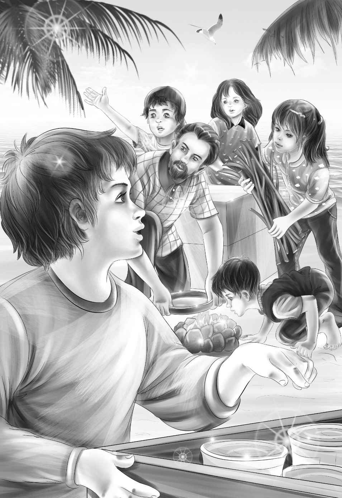

At Mike's loud voice,everyone looked ahead. There were two old huts. The family started to walk toward them.
Mike got there first. "All broken down," he said. "No good after all."
Lars said,"Yes,they are broken down,Mike. But I wouldn't say they were no good."
"They are certainly better than nothing," said Mr. Alden. "Remember,we must have something to sleep in this very night. We have no time to rebuild the huts."
The old huts were side by side and made of bamboo and sugar cane. There were holes in the roof and sides. Lars went up to the first one and shook it. It did not fall down.
"I hoped these were still here," said Lars. "We can fix them before any rain comes,Mr. Alden. And we may not be here when it rains."
"How can you be sure about rain?" asked Henry. "It may rain any minute."
"Right. It may. I must work on the roofs tomorrow. We'll just fix the floors for tonight."
"How?" asked Mike.
"Do you see those tall ferns?" Lars pointed. "Get all you can,and bring them here."
The whole family began to pick the huge ferns.
Mike said,"They smell good,don't they,Ben?"
"Yes,delicious!" said Benny. "We can smell them all night."
Mike could hardly walk with his load. He threw them down in front of the first hut. "Now what?" he asked.
"Lay them all over the floor,"said Lars. "They must be two deep. Then get some more."
They all worked very hard,but it was fun. They finished one hut and started the other. Soon that was done,too. Five blankets were put in the first hut. Two blankets were put in the other.
"That hut is for the girls," said Mr. Alden. "They have a whole hut all to themselves."
At last Mike stood still. He said,"Lars,I really thought the first thing would be finding something for us to eat,not picking so many ferns."
"Hungry,Mike?" asked Henry laughing. "Now you've got something there,brother! I am hungry as a bear. Where are those bananas,Lars?"
"Look over your head," said Lars.
"I see nothing but leaves," said Henry. "But what enormous leaves! They are as big as I am."
Lars smiled. "The bananas are behind those leaves," he said. "Just give me the hatchet." Lars was soon out of sight. When he came back he had a huge bunch of yellow bananas.
"Eat only one now,"he said to the boys. "Then we'll start supper."
"Oh,what are we going to have?"asked Jessie. "I didn't know I was so hungry."
"Let's open the canned meat," said Mike.
"Oh,no," said Benny. "Let's save the meat."
"Why?" asked Mike. "Save it for what?"
"Oh,I don't know," said Benny. "Let's have beans." He looked at Lars.
"Yes,Mr. Mike," said Lars,"I think we had better have the beans." He winked and smiled at Benny.
"Why?" asked Mike.
"Because I like beans better," said Lars,smiling.
Benny and Lars were the only ones who saw the joke. They knew that there were three cans of meat and twenty cans of beans.
"All right,Lars," said Mike. "Certainly we will have beans if you like them better."
"Good," said Lars. "We must have a fire for beans." He looked at Benny and laughed.
"Do you want a lot of dry sticks,Lars?" asked Henry.
"Exactly right," said Lars,much pleased. "Bring them down to the beach."

Lars and Violet found some flat stones on the beach. First,Lars dug a hole in the sand. Then they built a little fireplace with the stones. Lars put on the dry sticks and lit a match. Soon the fire blazed high.
"Aren't you glad Henry remembered the matches?" asked Benny. He was kneeling on the sand,watching.
"Yes,we are very lucky," said Lars. "Now that's going to be a fine fire soon."
The fire burned well. Everyone put on sticks.
"Open the beans,Henry!" cried Lars. "Two big cans."
"Three cans!" shouted Mike. "I can eat one can all by myself."
"Think of tomorrow,Mike," said Jessie.
"No,Jessie! We can think of something else tomorrow," said Mike.
So Henry opened three cans of baked beans. Lars took the biggest pan with a handle. He put the beans in it and put it over the fire.
"Stir that," he said to Mike. "It will keep you busy. You sit and smell the beans." He gave Mike a long spoon.
"Now we need plates," said Jessie.
"Maybe you could find something," said Lars.
"I know," said Jessie suddenly. "Come on,Violet!" The two girls ran down the beach. Soon they came back with seven large shells.
"We washed them in salt water," said Violet. "And here are some spoons."She showed Lars seven long razor clam shells.
"Good," said Lars. "We can eat beans with them anyway."
"Not soup,though," said Mike.
"No,not soup," said Lars. "I'll tell you what would be fun. Everyone can make a spoon for himself. You can take my knife."
"I have a knife," said Henry.
"I have a knife!" said Benny.
"And me too!" shouted Mike.
"Now,don't forget me," said Mr. Alden. "So have I."
Violet laughed. She said,"Jessie and I will take your knife,Lars. But I am not a very good spoon maker."
"I'll make you one,Violet," said Benny kindly. "You might cut yourself."
"These beans are hot!" called Mike. "I'm going to take them off the fire."
Lars took the big spoon. He filled the seven shells. The family began to eat as if they were starved.
"Good,"said Benny. "What else can we eat?"
"Milk and more bananas," said Lars. "Not a very good meal,but we can't have everything on a far-off island."
"I think it is a very good meal,Lars," said Benny.
Jessie said,"Violet and I found a fine dish-washing place." She ate the rest of her beans and began to eat a banana. "If you all wash your own shells,it won't be much work."
After supper the whole family went down the beach to the little sea pool.
Benny said,"No sharks can get in here,Lars. There are too many rocks. Right?"
"Right," said Lars.
Jessie said,"Now look down into the water. The water here is just like air. It's so clear,you can see the sand and all those funny things."
"Shells and crabs and colored fish," said Benny.
"That water is four feet deep in these pools," said Lars. "And see how clear it is. Jessie is right. It is just like air."
"Oh,look at that big fish swimming in!" cried Benny.
"That's a grouper," said Lars. "They get caught in these pools at low tide."
"Can't they ever get out?" asked Mike.
"Not till high tide," said Lars. "Low tide is the time to catch them."
"Here's where we go fishing then," said Henry.
"That's right," said Lars. "We can make a good fish stew with grouper and dry milk."
Jessie shook the water out of her shell. She looked at Mike. He was very quiet. "Time we went to bed," she said. "Mike can hardly keep his eyes open."
"Yes,I can,too,Jessie," said Mike in a loud voice,but he walked very slowly. When he reached the first house,he went in and curled up on his blanket like a little dog. Benny did the same.
Mr.Alden laughed and said,"Good night,girls!"
"Yell if you want anything," said Lars. "Remember now!"
Jessie and Violet curled up on their blankets in their own little house.
The whole family slept till morning.